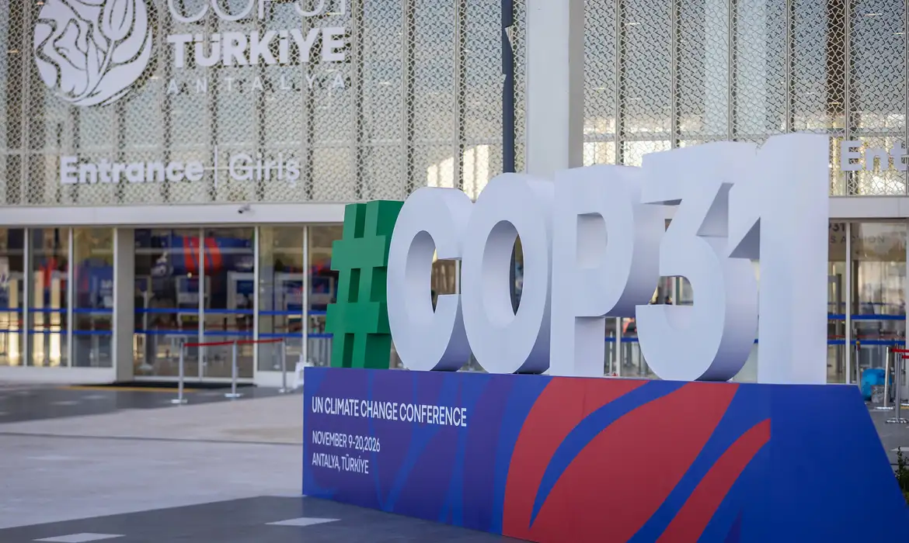

Inteligência Artificial
Brasil adere a compromisso internacional na COP31 para incentivar IA sustentável e defender empregos
17/11/2026 às 05:29 (horário de Brasília)

O Brasil assinou nesta segunda-feira (16), durante a COP31 em Antália, na Turquia, a adesão ao Compromisso de Antália sobre Inteligência Artificial. A iniciativa multilateral foi liderada pela Presidência turca em parceria com a Organização das Nações Unidas para a Educação, a Ciência e a Cultura (Unesco) e a União Internacional de Telecomunicações (UIT), voltando-se ao uso responsável da tecnologia diante dos desafios climáticos e trabalhistas.
O documento tem entre suas prioridades a contenção dos impactos ecológicos associados à infraestrutura de data centers, com ênfase no alto consumo de água e energia elétrica, além da preservação de postos de trabalho ameaçados pela crescente automação. Representando a delegação brasileira, o secretário de Telecomunicações do Ministério das Comunicações, Hermano Tercius, defendeu que o avanço tecnológico deve assegurar garantias aos trabalhadores.
Durante o evento internacional, representantes brasileiros apresentaram ações públicas ligadas à transformação digital e sustentabilidade, como a plataforma Gov.br, o Plano Brasileiro de Inteligência Artificial e o programa Computadores para Inclusão. O país também participou de debates sobre a futura instalação da sede do Instituto de Inteligência Artificial para Mudanças Climáticas (AICI) em território nacional.